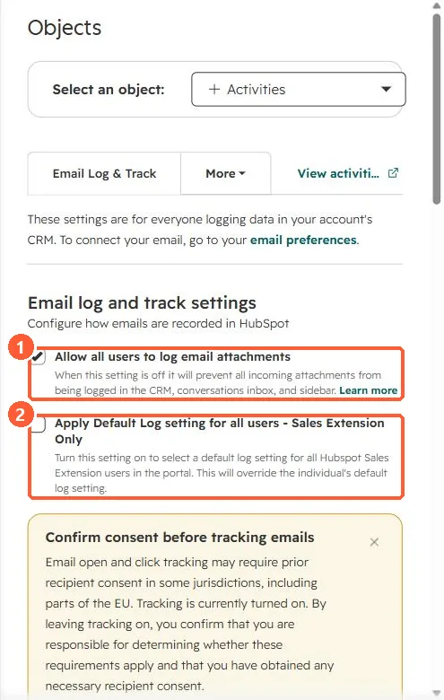

Short answer
The HubSpot Sales Chrome extension adds Track and Log checkboxes, templates, meetings and tasks to Gmail. Account-wide defaults live in Settings, Objects, Activities, Email Log & Track. When it stops working, update Chrome and the extension first, make sure you are in the Chrome profile where it is installed, and check you are not on Google's Rapid Release track, which is not compatible. When emails stop tracking, the usual causes are the Track box not ticked, a conflicting extension (AdBlock, Boomerang, MailTrack, Privacy Badger, Yesware and others), a VPN, or a customized Gmail layout.
1. What the extension does
Install the HubSpot Sales Chrome extension for Gmail (or the Office 365 add-in for Outlook, see HubSpot with Outlook). In a Gmail compose window it adds:
- Track: inserts a tracking pixel so you see opens. Tracking one-to-one email clicks needs Sales Hub Starter, Professional or Enterprise and an assigned Sales seat.
- Log: saves the email to the contact's timeline in HubSpot. If the recipient is already a contact, a HubSpot sprocket icon shows next to their address in the To field.
- Templates, Meetings and Tasks on the compose toolbar.
- An Activity Feed under the HubSpot icon in Chrome's toolbar, showing when tracked emails were opened.
To log emails and create contacts, the sending address must be a user in your account, one of your connected email addresses, or an alias set in Gmail or in your HubSpot profile.
2. Account-wide defaults
Admins set defaults in Settings, Objects, Activities, Email Log & Track: whether users can log attachments (1), and Apply Default Log setting for all users - Sales Extension Only (2):


- Attachments over 50 MB do not log.
- Users can still turn tracking and logging off for one message, or for specific contacts or domains in their extension settings.
- Keep internal domains out with the Never Log list. The same page covers log-all vs log-replies rules.
3. The extension is not working at all
- Update Chrome (three dots, Help, About Google Chrome) and update the extension.
- Check the Chrome profile. The extension only runs in the profile where it is installed.
- Check the release track. HubSpot says Google's Rapid Release track is not compatible. Ask IT to switch to the default track.
4. Emails are not tracking
- Was Track ticked? Without it, no tracking pixel is inserted.
- Conflicting extensions. HubSpot lists AdBlock, Bomb Bomb, Boomerang, Ghostery, Gmail - reply from top, MailTrack, Privacy Badger and Yesware. The extension's own Help & troubleshooting section (sprocket icon in Gmail) checks for known conflicts.
- VPN software such as NordVPN can block the tracking request. Turn it off and send a tracked test email to check.
- Customized Gmail layouts do not support tracking or logging.
- Data privacy settings. With them on, tracking is not added for contacts without a legal basis. See GDPR settings.
5. Emails are not logging
- The sending address is not a HubSpot user, connected inbox or alias.
- The recipient is on your or your account's Never Log list.
- The Log box was not ticked and the default log setting is off.
- The attachment is over 50 MB (the email logs, the attachment does not).
6. What is changing for 2027
- Opens are less reliable. Privacy features and scanners trigger open events, so judge sales emails on replies and clicks. See how opens are counted.
- Browser release tracks matter. Faster Chrome release channels are where compatibility breaks first; keep sales teams on the default track.
Common questions
The HubSpot icon disappeared from Gmail.
Update Chrome and the extension, check you are in the right Chrome profile, and check you are not on the Rapid Release track.
Why does my tracked email show no opens?
Check the Track box was ticked, then look for conflicting extensions or a VPN. Recipients' privacy tools can also block or fake opens.
Can I track clicks for free?
No. Tracking one-to-one email clicks needs Sales Hub Starter or above and a Sales seat.
How do I stop internal emails logging?
Add your company domain to the Never Log list.